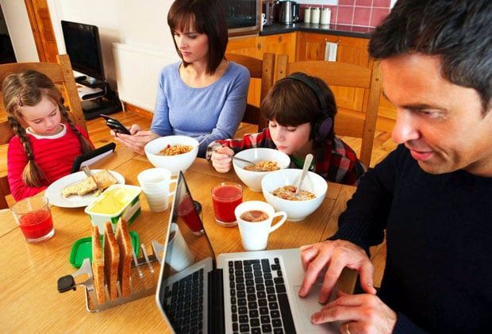
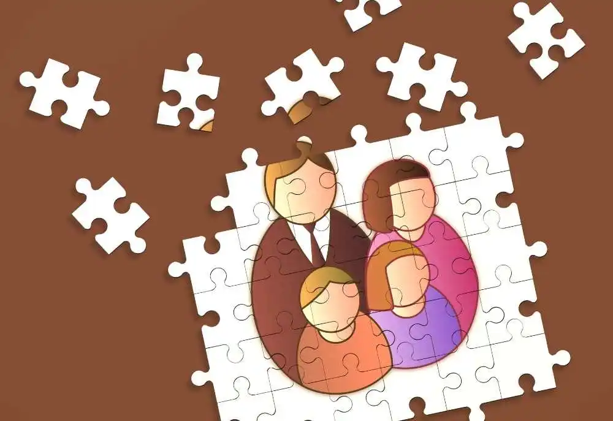

ULTIMAS NOTICIAS
La Importancia de la Comunicación en la Orientación Familiar

La comunicación efectiva es fundamental en la orientación familiar. Cuando los miembros de la familia se comunican de manera abierta y respetuosa, se pueden resolver conflictos y fortalecer los lazos familiares. La orientación familiar se centra en enseñar a las familias a comunicarse de manera más efectiva, lo que puede conducir a una convivencia más armoniosa y relaciones familiares más saludables.
En las sesiones de orientación familiar, se brindan herramientas y técnicas para mejorar la comunicación, como escuchar activamente, expresar sentimientos de manera constructiva y resolver problemas en equipo. Estas habilidades no solo benefician a la familia en el presente, sino que también sientan las bases para relaciones familiares fuertes y positivas en el futuro.
El Impacto Positivo de la Orientación Familiar en la Salud Mental

La orientación familiar no solo mejora las relaciones familiares, sino que también tiene un impacto positivo en la salud mental de todos los miembros de la familia. Cuando las familias aprenden a manejar el estrés, la ansiedad y los desafíos emocionales juntas, se crea un entorno de apoyo que beneficia la salud mental de todos. Las sesiones de orientación familiar ofrecen un espacio seguro para hablar sobre los desafíos emocionales y aprender estrategias para enfrentarlos de manera efectiva.
Además, la orientación familiar puede ser especialmente beneficiosa para los niños y adolescentes al proporcionarles las habilidades emocionales necesarias para lidiar con el estrés y la presión de la vida moderna. Aprender a comunicarse y resolver problemas en el contexto familiar puede tener un impacto duradero en su bienestar emocional y en su capacidad para construir relaciones saludables en el futuro.